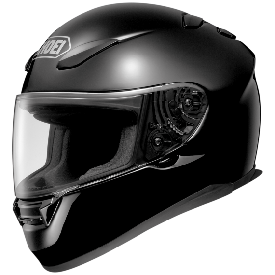
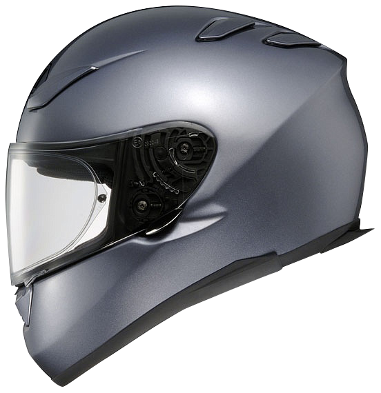
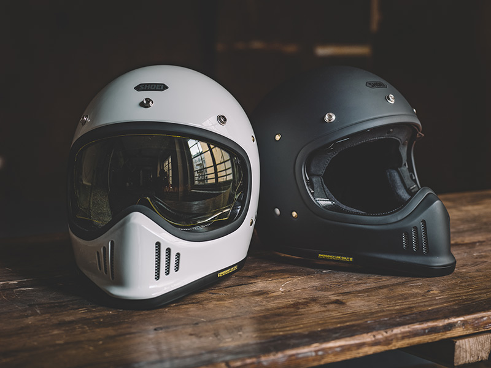
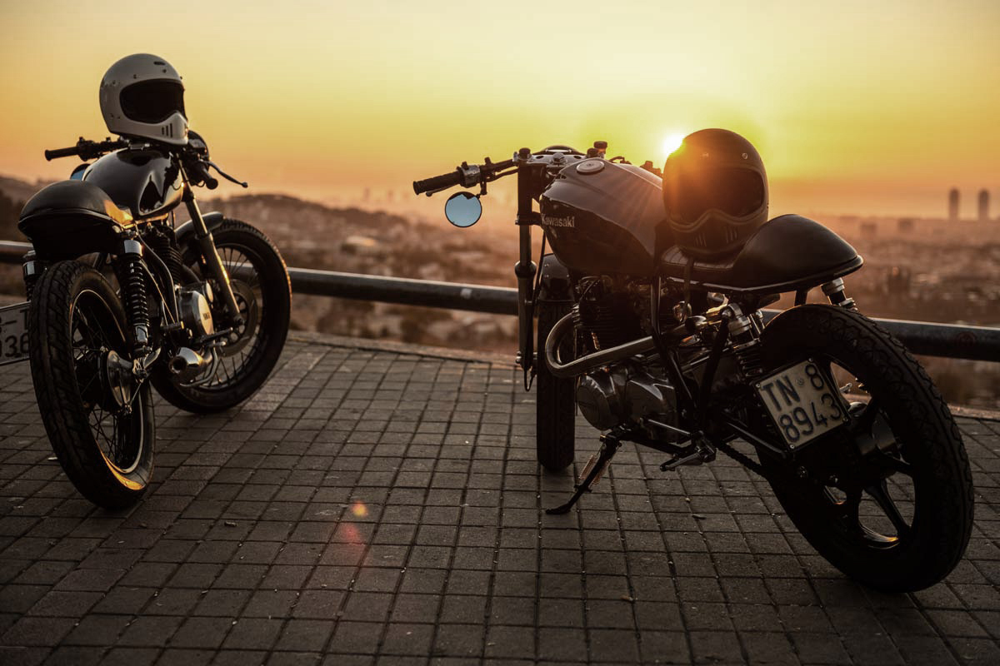

Premium Helmets
Free delivery on all protective gear

Free delivery on all protective gear


Form & Function Redefined

Form & Function Redefined

Form & Function Redefined

Form & Function Redefined

AN UPDATED VERSION OF SHOEI'S 1980s' OFF-ROAD HELMET
The off-road helmet with its large, open-visor aperture and extended nose piece was invented by Bell back in the 1970s. Known even then as the Moto 3, every modern, off-road helmet still carries elements of the original's DNA.
Back in the day, everybody jumped on the bandwagon and, within a few years, most helmet manufacturers had their own version of a Moto 3; including, of course, players like Arai and Shoei.
enjoy the ride
Now, last year, Bell re-introduced their Moto 3, as a way of combatting all those artisanal makers who were copying it. There was, and is, nothing wrong with the Bell helmet, per se. But unlike some of the larger manufacturers who have different head fits for the American, European and Asian markets, Bell produces only one fit. It's a rather round, American fit, and not everybody over here gets on with it. In fact, we reckon nearly 50% of visitors to our shop in Guildford fail to make a Bell work for them. Which is a shame, because no brand has a heritage to equal Bell's.
Starting at $699.00
An every-occasion helmet with the adaptability to excel no matter where your next journey takes you, the NEOTEC II does it all with style and precision. The convenient “flip-up” versatility of a true two-in-one helmet combined with next-level aerodynamics, an internal sun shield, the Pinlock® EVO fog-resistant system, and the ability to seamlessly integrate with the all-new SENA SRL Communication System, the NEOTEC II is the pinnacle of modular helmet design for today's hybrid motorcyclists.
